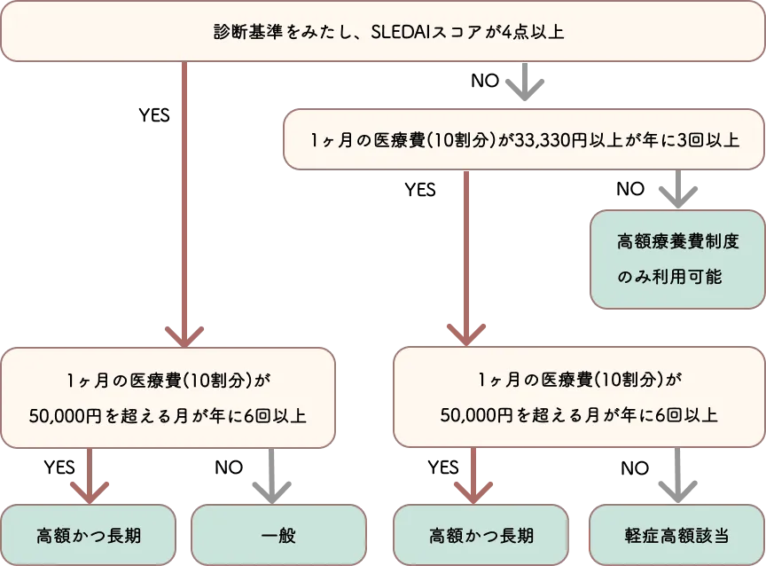

SLEの診断基準
難病法の医療費助成の制度（特定疾患受給者票）の診断基準（2024年4月から）
特定疾患受給者票（受給者証）の認定では、病名ごとに国が決めた「診断基準」と「重症度分類」を満たすかがポイントです。これは“検査１つで決まる”ものではなく、指定医が作る臨床調査個人票に、症状・検査・臓器の状態や治療状況をまとめ、自治体が総合的に審査します。自分で要点を押さえると、受診時の説明もスムーズです。
難病法の医療費助成制度はどのようなものですか？
治療が困難で長期療養が必要な指定難病の患者さんの医療費を軽減する制度です。SLEは指定難病の1つ（指定難病49）として、医療費助成の対象となっています。認定を受けるには以下の基準を満たす必要があります。
全身性エリテマトーデスの医療費助成の認定基準
全身性エリテマトーデスと診断され、次に該当した場合は「難病法」による医療費助成を受けることができます。
SLEの診断基準を満たし、重症度分類 SLEDAIスコア4点以上の患者さん、または高額な医療費を継続している患者さんが該当します。

わたしたちが直面する医療費助成の審査基準となる診断方法とは？
1. 診断方法
・まず、抗核抗体80倍以上を満たしているかを確認します。『A』
・そして、患者さんの症状（臨床所見）『B』と血液検査などの結果（免疫所見）『C』を点数化します。
・この点数の合計が10点以上になれば、SLEと診断されます。
・病気を診断するとき、症状や検査結果をいつのものを使ってもOKです。
2. 点数のつけ方
・SLE以外の病気の可能性が高い症状には点数をつけません。
・同じ種類の症状がいくつかある場合は、一番点数の高いものだけを数えます。
（注意事項を参考にしてください）
3. 症状について
・病気の経過中に、Bの項目は少なくとも1つは症状が現れる必要があります。
・すべての症状が同時に出る必要はありません。
4. 病気の重さの判断
・治療を始めた後、どのくらい病気が重いかをSLEDAIスコアで判断します。
・医師が、最近6ヶ月間で一番具合が悪かったときを基準に判断します。
5. 医療費の助け（高額かつ長期や軽症高額該当の適応）
・病気がそれほど重くなくても、お金のかかる治療を続ける必要がある人は、医療費助成の対象です
・医療費が５万以上を１２ヶ月のうち5回以上だと医療費減額の対象です。
診断基準とは？
厚生労働省の指定難病の診断基準はこちらの3ページを参考にしています。
■ 診断基準に関する事項 ＜診断のカテゴリー＞
Ａをみたし、ＢとＣの陽性項目の点数の合計が 10 点以上 で、
Ｂは経過中に 1 項目以上陽性化している場合
診断基準は
抗核抗体80倍以上（A）かつ
BとCの合計点数が10点以上でBの項目に該当する症状が一つでもある
A 、B、Cの項目を見てみましょう
| 全身症状 | 1. 38.3℃をこえる発熱（2 点） |
|---|---|
| 皮膚粘膜 | 1. 非瘢痕性脱毛（2 点） |
| 2. 口腔内潰瘍（2 点） | |
| 3. 亜急性皮膚ループスや円板状ループス（4 点） | |
| 4. 急性皮膚ループス（蝶形紅斑や斑状丘疹状丘疹）（6 点） | |
| 筋骨格 | 1. 関節症状(2 個以上の滑膜炎もしくは関節圧痛と 30 分以上の朝のこわばり）（6 点） |
| 精神神経 | 1. せん妄（2 点） |
| 2. 精神障害（3 点） | |
| 3. 痙攣（5 点） | |
| 漿膜 | 1. 胸水または心嚢液（5 点） |
| 2. 急性心外膜炎（6 点） | |
| 血液所見 | 1. 4,000/mm3未満の白血球減少（3 点） |
| 2. 10 万/mm3未満の血小板減少（4 点） | |
| 3. 自己免疫性溶血（4 点） | |
| 腎臓 | 1) 0.5g/日以上の尿蛋白（4 点） |
| 2. 腎生検でクラス II または V のループス腎炎（8 点） | |
| 3. 腎生検でクラス III または IV のループス腎炎（10 点） |
注意事項
SLEの診断基準では、症状や検査結果いくつかの大きなカテゴリー（大項目）に分けられています。そして、各大項目の中にはさらに詳細な症状や所見（小項目）が含まれています。
例えば：
1. 大項目：皮膚粘膜症状
・小項目A：非瘢痕性脱毛（2 点）
・小項目B：口腔内潰瘍（2 点）
・小項目C：亜急性皮膚ループスや円板状ループス（4 点）
・小項目D：急性皮膚ループス（蝶形紅斑や斑状丘疹状丘疹）（6 点）
2. 大項目：血液所見
・小項目E：4,000/mm3未満の白血球減少（3 点）
・小項目 F：10 万/mm3未満の血小板減少（4 点）
・小項目 G：非瘢痕性脱毛（4 点）
同じ大項目内で複数の小項目が陽性（該当する）場合、その中で最も点数の高いものだけを採用するということを意味します。
具体例：
・もし患者さんが「非瘢痕性脱毛」と「口腔内潰瘍」の両方を持っていても、皮膚症状の大項目からは2点しか加算されません
（両方とも2点なので、どちらか一方のみ）。
・一方、「非瘢痕性脱毛」（4 点）と「急性皮膚ループス」（2点）がある場合は、異なる大項目なので、4点と2点の合計6点が加算されます。
| 特異抗体 | 抗 dsDNA 抗体または抗 Sm 抗体（6 点） |
|---|---|
| 補体 | 1. C3 または C4 の低下（3 点） |
| 2.C3 および C4 の低下（4 点） | |
| 抗リン脂質抗体 | 抗カルジオリピン抗体、抗β2GPI 抗体またはループスアンチコアグラント（2 点) |
重症度分類SLEDAIとは
重症度分類SLEDAIスコアはSLEの活動性を評価するためのものです。
SLEDAIスコア：
重要臓器（腎臓、中枢神経系、肺、心臓など）の障害の有無や程度も評価されます。
下記の点数の合計を計算します。
| 痙攣 (8点) | 最近発症。代謝性、感染性、薬剤性は除外。 |
| 精神症状 (8点) | 現実認識の重度の障害による正常な機能の変化。幻覚、思考散乱、連合弛 緩、貧困な思想内容、著明な非論理的思考、奇異な、混乱した、緊張病性の 行動を含む。尿毒症、薬剤性は除外。 |
| 器質的脳障害 (8点) |
以下の A～D の全てを満たす意識混濁がある。 (A)見当識・記憶・他の知的機 能の低下を伴う、 (B)急性発症の変動する臨床症状を有する、 (C)周囲の環境 に対する注意維持力の低下、 (D)以下の 1～4 の少なくとも２つを認める。 1. 知覚障害、 2. 支離滅裂な発言、 3. 不眠症あるいは日中の眠気、 4. 精神運 動活動の増加あるいは減少。[除外]代謝性、感染性、薬剤性。 |
| 視力障害 (8点) | SLE による網膜の変化。軟性白斑、網膜出血、脈絡膜における漿液性の浸 出あるいは出血、視神経炎を含む。高血圧性、感染性、薬剤性は除外。 |
| 脳神経障害 (8点) | 脳神経領域における感覚あるいは運動神経障害の新出。 |
| ループス頭痛 (8点) | 高度の持続性頭痛：片頭痛様だが、麻薬性鎮痛薬に反応しない。 |
| 脳血管障害 (8点) | 脳血管障害の新出。動脈硬化性は除外。 |
| 血管炎 (8点) | 潰瘍、壊疽、手指の圧痛を伴う結節、爪周囲の梗塞、線状出血、生検又は血 管造影による血管炎の証明。 |
| 関節炎 (4点) | 潰瘍、壊疽、手指の圧痛を伴う結節、爪周囲の梗塞、線状出血、生検又は血 管造影による血管炎の証明。 |
| 筋炎 (4点) | CK・アルドラーゼの上昇を伴う近位筋の疼痛／筋力低下、あるいは筋電図 変化、筋生検における筋炎所見。 |
| 尿円柱 (4点) | 顆粒円柱あるいは赤血球円柱。 |
| 血尿 (4点) | ＞５赤血球/HPF。結石、感染性、その他の原因は除外。 |
| 蛋白尿 (4点) | ＞0.5g/24 時間。新規発症あるいは最近の 0.5g/24 時間以上の増加。 |
| 膿尿 (4点) | ＞５白血球/HPF。感染性は除外。 |
| 新たな発疹 (2点) | 炎症性皮疹の新規発症あるいは再発。 |
| 脱毛 (2点) | 限局性あるいはびまん性の異常な脱毛の新規発症あるいは再発。 |
| 粘膜潰瘍 (2点) | 口腔あるいは鼻腔潰瘍の新規発症あるいは再発。 |
| 胸膜炎 (2点) | 胸膜摩擦音あるいは胸水、胸膜肥厚による胸部痛。 |
| 心膜炎 (2点) | 少なくとも以下の１つ以上を伴う心膜の疼痛：心膜摩擦音、心嚢水、あるいは 心電図・心エコーでの証明。 |
| 低補体血症 (2点) | CH50、C3、C4 の正常下限以下の低下。 |
| 抗 DNA 抗体上昇 (2点) | Farr assay で＞25％の結合、あるいは正常上限以上。 |
| 38度以上の発熱 (1点) | ＞38℃、感染性は除外。 |
| 血小板減少 (1点) | ＜100,000 血小板/mm 3。 |
| 白血球減少 (1点) | ＜3,000 白血球/mm 3、薬剤性は除外。 |

まとめ：診断基準とSLEDAIスコアについて
診断基準はSLEという病気であるかどうかを判断するためのもので、SLEDAIスコアはその病気の活動性を評価するためのものです。
医療費助成の判断には、診断基準を満たしてSLEと診断されていることが前提で、その上でSLEDAIスコアなどを用いて重症度を評価し、助成の対象となるかどうかを判断します。
診断基準
・通常、臨床症状と検査結果を組み合わせて点数化し、一定点数（多くの場合10点以上）に達すると診断されます。
・診断基準は、患者さんがSLEであるかどうかを判断するためのものです。
SLEDAIスコア
・SLE Disease Activity Index（全身性エリテマトーデス疾患活動性指標）の略です。
・すでにSLEと診断された患者さんの病気の活動性（重症度）を評価するために使用されます。
・0〜105点のスケールで評価され、点数が高いほど疾患活動性が高いことを示します。
・医療費助成の対象となるかどうかの判断に使用される場合があります（4点以上が一つの基準となることが多い）。

軽症高額該当とは
「軽症」であっても高額な医療を続けている方も難病医療費助成制度による助成を受けられます。
対象者
重症度分類を満たさないものの、月ごとの医療費総額が33,330円を超える月が年間3回以上ある患者さんです。
高額かつ長期とは
高額な医療費が長期に続く方向けの助成
一般所得・上位所得について、軽減された負担上限額が設定されています。
対象者
指定難病及び小児慢性特定疾病（※）にかかわるの医療費（10割）が月に5万円を超える月が、申請する月の12か月以内で6回以上ある患者さんです。
従来のSLEの分類基準とは
様々な分類基準があります。
SLEの重症度分類 SLEDAI 1992年
ACR基準 1987年
ACR (American College of Rheumatology) 改訂分類基準 1997年
SLICC (Systemic Lupus International Collaborating Clinics) 分類基準 2012年
EULAR/ACR SLE分類基準 2019年
作成日・更新日

おすすめのページ


いま、気になること
気になる言葉を押すと関連ページに飛びます